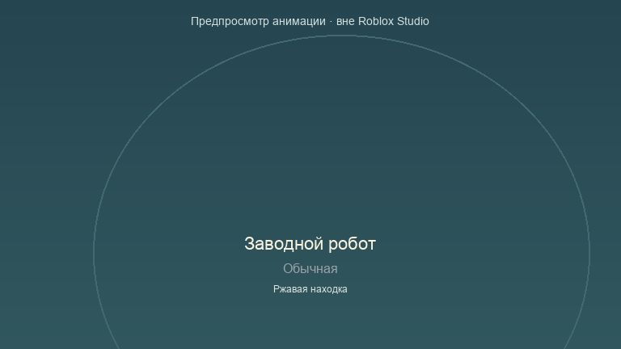

MAGNET WORKSHOP SIMULATOR · ЛОКАЛЬНЫЙ ПРЕДПРОСМОТРНаходка из озера
Предмет появляется в центре, подсвечивается по редкости и перемещается к инвентарю.

Автономный эскиз по существующим моделям и временной шкале Luau. Это не запись из Roblox Studio.Легендарная: золотой цвет зарезервирован, предметов пока нет.
Распределение 108 видов
По 12 предметов в каждом биоме: 4 обычных, 3 необычных, 2 редких, 2 эпических, 1 мифический. Ржавое и очищенное состояния считаются одним видом. Распределение не задаёт цены и шансы.